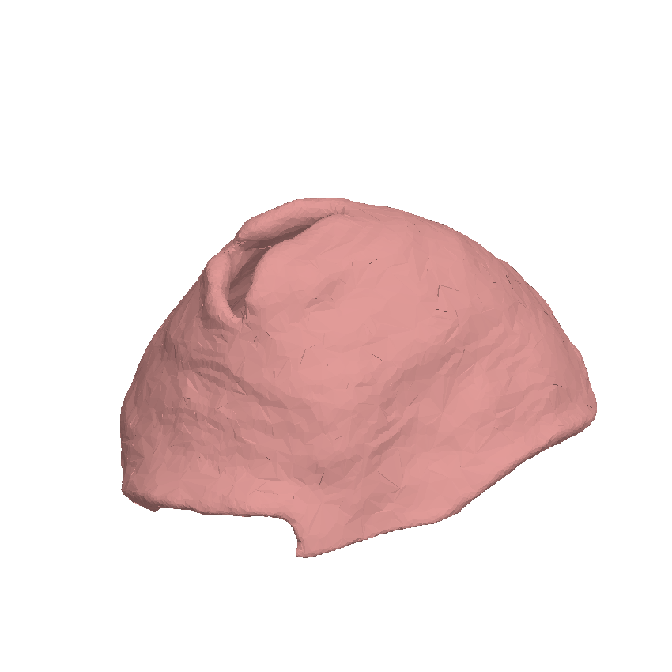

See the valve.
Shape the repair.
Explore patient-derived mitral anatomy, position a virtual clip, and examine how the modeled flow responds — before a procedure begins.
Research prototype. The hosted experience uses real segmented anatomy and illustrative hemodynamics. Not for clinical decisions.

patient-derived segmented valve surfaces in the research library
deforming valve and virtual clip in the original workspace
featured full-resolution cases available in the hosted explorer
Anatomy first. Consequences in view.
The workspace retains the original segmented geometry, articulated device model, animated valve motion, particle flow, waveform, and camera controls.
Select anatomy
Load the featured segmented valve or one of six patient-derived STL surfaces.
Inspect motion
Orbit the valve, switch clinical viewpoints, and watch the leaflet cycle and flow visualization.
Place a clip
Enable the articulated clip, move it across the coaptation zone, and inspect the visible pinch.
Compare response
Explore illustrative telemetry and a relative leak index as the configuration changes.
Every shape comes from a mesh.
Select a case below. The previews are rendered from the actual valve STLs; the workspace loads and animates the full surfaces.

Case 087
Explore differences in annular geometry before opening the animated 3D workspace.
Be precise about what the demo shows.
The visuals are grounded in patient-derived mesh geometry. The hosted physiology is an interactive approximation, while full fluid–structure integration and validation remain ongoing work.
Implemented in the repository
Real segmented surfaces and MitraClip geometry anchor the experience.
- 105 segmented valve files; six featured hosted cases
- Articulated clip assembly and leaflet deformation
- Reduced-order hemodynamic model and placement search
Still in development
The current browser outputs should be read as an exploration of model behavior.
- Full transient FSI solver integration
- Trained and validated end-to-end segmentation
- Clinical validation of predicted outcomes
Move the clip. Watch the valve respond.
Open the patient-derived 3D experience from the TEER research prototype.
Launch the workspace →